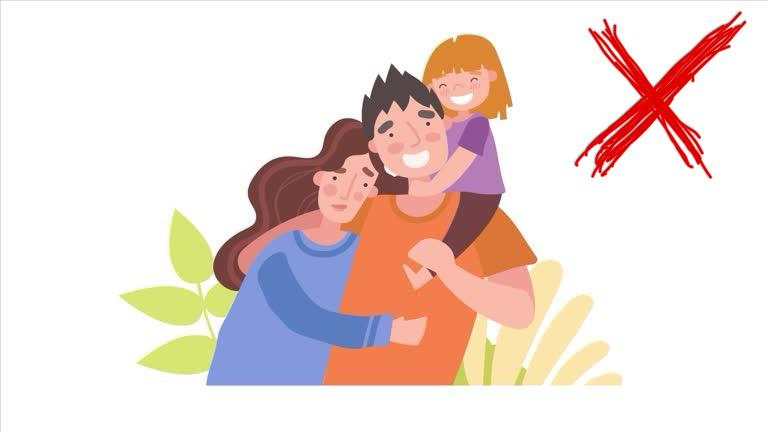

HIV Myths vs Facts

Myth: HIV can spread through casual contact
Fact: HIV is not spread through hugging, shaking hands, or sharing food.
Myth: Mosquitoes can transmit HIV
Fact: HIV cannot survive or replicate in mosquitoes.

Myth: HIV is a death sentence
Fact: With treatment, people with HIV can live long, healthy lives.